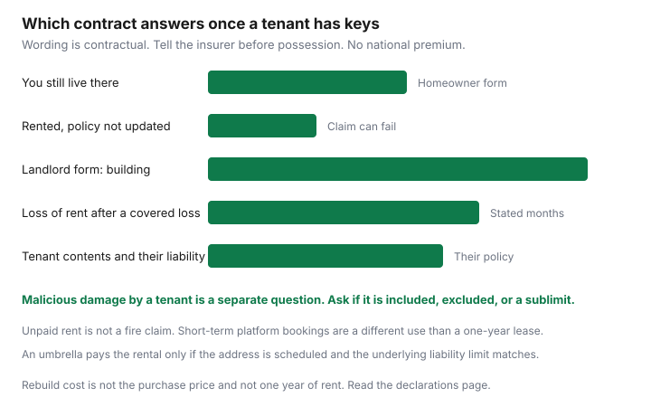

Insurance · Canada
Landlord Insurance in Canada: Why a Standard Home Policy Fails on a Rental
A homeowner policy is priced for a household that sleeps in the house. The day a tenant’s lease starts, the use is different. Families who leave the owner-occupied policy in place often discover the gap when a kitchen floods or a guest is hurt on the steps. This page is the landlord contract: notice before possession, loss of rent and liability, short-term platforms, what the tenant insures, suites, and whether an umbrella actually lists the address. Rent increases, deposits, and tenant remedies stay on the Housing guides. They are linked where a fact overlaps. They are not rewritten here.
Disclosure: Home insurance quote flows and broker quote portals are offer types when the current insurer will not keep an owner-occupied form on a rental. Saving Optimizer may earn a commission if those links are added later. We do not claim a partnership with any brokerage or insurer. Education only. The declarations page controls. There is no national landlord premium.
Key takeaways
- Tell the insurer before the tenant moves in. An owner-occupied policy is the wrong contract for a house you rent.
- Get the building limit, your appliances, premises liability, loss of rental income, and malicious-damage wording in writing.
- A booking-site host guarantee is not a Canadian policy. Short-term use needs an endorsement or a commercial form before the first stay.
- The tenant’s contents and personal liability are their policy. Your building and your liability as owner stay on yours.
- A basement suite is an underwriting fact: how many units, whether you still live there, and whether people cook there.
- An umbrella pays a rental lawsuit only if the address is scheduled and the underlying limit matches. Price that against a higher limit on the landlord policy.
Occupancy change: notify insurer when you rent out a former primary home
The trigger is the change of use, not the first claim. Write to the broker or the insurer before you hand over keys. Give the date the tenant takes possession, whether you will still live in any part of the building, whether the lease is a year or a string of short stays, and whether the house will sit empty between tenants.
A principal-residence form is priced for you living there. Renting it, even to one household, is a material change. The condo unit guide already says owner-occupied wording can exclude tenant-caused damage or loss of rent. A house is the same family of problem on a landlord form.
Vacant is a different word from rented. A house with no occupant, and no plan that you will live there, is often treated as vacant, and many wordings limit cover after a stated run of consecutive days unless the insurer agrees in writing. Ontario’s home statutory conditions, as the home-claim guide uses them, govern notice after a loss. They are not a national vacancy-day count you can borrow for every province. Read the vacancy and change-of-occupancy clauses in your booklet. A furnished house you will return to after a winter away is an unoccupancy question on the retirement review. A tenant with a lease is this page. Say which fact is true.
| Fact | Why the underwriter asks |
|---|---|
| Possession date | The new form should be in force that morning. Cancel the old form only after the new one is bound. |
| Who lives there | Owner-occupied, fully tenanted, or you in one unit and a tenant in another. Those are three risks. |
| Lease shape | A one-year residential lease is not a weekend booking. Short-term use is the next section. |
| Units and kitchens | A second kitchen can move the file from a house to a multi-unit or a rooming house. |
| Dwelling limit | Rebuild cost, from the replacement-cost guide. Not the purchase price and not a year of rent. |
| Mortgagee | The lender’s name and address have to appear on the new policy. A landlord form that drops the mortgage clause is a problem at renewal with the bank. |
If this insurer will not write a rented house, ask for one other quote on the same building limit, the same deductible, and the same liability before the tenant moves in. Shopping identical cover is the method on the home-shopping guide. A quote portal is a way to ask. It is not permission to leave the house uninsured for a day.

Loss of rent, liability to tenants, and malicious damage coverages
A landlord form is not the old PDF with a new title. Ask for these lines on the declarations, in dollars and in days.
- Building. Replacement cost or actual cash value, on a rebuild limit. The water guide and the overland-flood guide still apply. Sewer backup and overland flood are often optional on a rented house, the same way the Insurance Bureau of Canada treats them as typically optional on a home policy. A cheap landlord quote that deletes them has not saved you the claim.
- Your contents. Appliances, window coverings, and tools you own. The tenant’s sofa is not this line.
- Premises liability. Someone hurt because of the property. On condo unit policies, $1 million is a common floor and $2 million is the 2026 conversation in many managed buildings, the figure the condo guide already uses. A rented house can face the same slip. Match the limit to the lawsuit you would not pay from the building, and write the number down.
- Loss of rental income. After an insured loss that makes the unit unrentable, for a stated number of months. Ask whether the wording pays the rent on the lease or a fair rental value, and whether a delay you cause by not repairing counts. Rent a tenant simply stops paying is not this coverage.
- Malicious damage. Ask the question in those words. Some forms cover vandalism by strangers and exclude damage a tenant causes on purpose. Others sell a tenant-vandalism endorsement with a sublimit and a higher deductible. A worn carpet at the end of a lease is wear. A smashed kitchen may be covered only if that endorsement is on the page.
A lease clause that requires the tenant to carry insurance does not insure your building. It can put liability and contents on their policy. Your policy still has to exist on the morning they move in.
Short-term rental platforms: special endorsements or commercial policies
A one-year lease and a weekend booking are different uses. Many homeowner policies, and many landlord policies written for an annual tenant, exclude or cap home-sharing, bed-and-breakfast, and platform rentals. Read that exclusion before you list the address.
A platform’s host guarantee is the platform’s contract with you. It is not a policy issued in your province, and it does not name your mortgage lender. Ask your insurer for a short-term endorsement or a commercial form that states the maximum nights, whether you must be in the home, and that guests’ belongings are not your contents. If the insurer declines, that is the moment for a second quote, not the moment to go live.
Municipal licensing and a condo declaration can forbid the use even when an insurer would sell it. This page does not interpret a by-law. If the corporation’s rules forbid short stays, an endorsement does not override the declaration. The condo guide flags short-term use as both a rules problem and an insurance problem.
Tenant’s own contents are not your problem—but your building is
Your building, the liability that comes from owning it, and rent you lose after an insured loss are your policy. The tenant’s furniture, clothing, and electronics, and their liability when they cause a loss, are a tenant policy. The tenant insurance guide is the comparison for them: lease liability, contents, and the cost of going without. Send them there. Do not add their belongings to your contents limit. That misstates what you own.
You can ask, in the lease, for proof of tenant insurance and, if your own lawyer says the clause works in your province, to be named on their liability. A certificate on move-in day expires. Diary their renewal. Their lapse does not pay your deductible.
If a guest is hurt in the unit, both policies can be in the conversation. Yours answers as owner if the wording covers the premises. Theirs answers as occupant if they bought liability. Neither one pays the other person’s furniture by default. Housing’s pages on deposits, assignments, and rent increases are the tenancy rules. They do not choose your deductible.
Multi-unit and basement-suite underwriting questions
Underwriters ask questions a single-family application skips. Answer them before anyone sleeps in a second unit.
- How many units, and how many kitchens. A second kitchen is a fact, even if you call the space storage.
- Do you live in one unit. You upstairs and a tenant downstairs is not the same file as a fully tenanted duplex, and it is not the same file as a rooming house.
- Is the suite a legal secondary suite. The basement checklist is the renter’s walk-through of egress and alarms. You are the owner. The insurance question is disclosure. An undeclared suite you describe as a rec room, while someone lives and cooks there, is a material change.
- One family, or several unrelated adults. The number of adults can change the form. Say the true number.
- A condo you rent uses the corporation-versus-unit split on the condo guide, plus this occupancy change. Loss assessment and the corporation’s water deductible do not disappear because a tenant lives there.
Set the dwelling limit at rebuild cost for every unit the policy is meant to rebuild. The home-shopping guide is that method. A purchase price from five years ago is a memory.
Compare landlord policy vs umbrella liability for lawsuit exposure
A judgment above the landlord liability limit is yours to pay, unless an umbrella lists this premises and the underlying policy meets the umbrella’s minimum. Many personal umbrellas are written for a home you live in and a car you drive. A rental can be excluded, or it can be added once landlord liability sits at the amount the umbrella requires, often $1 million or $2 million. Read the schedule of locations. If the rental address is missing, the umbrella is missing.
Compare two written totals at the same building limit and the same deductible:
- Landlord liability at $1 million, and the same policy at $2 million, with loss of rent either on both quotes or on neither.
- An umbrella that names the rental, bought only on top of the underlying limit it demands. If the umbrella also requires your auto to be scheduled, include that premium. The bundle guide is the habit of comparing the pair, not the sticker.
Keep the structure whose premium buys the limit you would not want to fund from the property. There is no Canada-wide price for the extra million. Put the renewal 45 days out on the same sheet as the annual review, and re-read occupancy, the tenant’s certificate, and the umbrella schedule every year the lease renews.
Sources & date stamps
- Financial Consumer Agency of Canada, getting insurance — know what the policy is for before you rely on it. Page used 24 Sep 2026.
- Occupancy, loss of rent, malicious damage by a tenant, and short-term rental exclusions are contractual. The declarations page and the wording control. No national premium or deductible is stated.
- Insurance Bureau of Canada treats sewer backup and overland flood as typically optional. Confirm both on a landlord quote the same way the home-shopping guide does. Used 24 Sep 2026.
- Condo rental-use changes and the $1 million / $2 million liability conversation are on the condo unit guide, which this page does not replace.
Frequently asked questions
Does my homeowner policy cover a house I rent out?
Often it does not, once the use changes and you have not told the insurer. An owner-occupied form is priced for you living there. Ask for a landlord or rental-dwelling quote before the tenant takes possession, and keep coverage in force with no bare day. The declarations page is the contract.
Does landlord insurance pay the tenant’s furniture?
No. Your policy is the building, the appliances and other contents you own, your liability as owner, and loss of rent after a covered loss if that line is on the policy. The tenant’s belongings and their personal liability are a tenant policy. Unpaid rent is not a fire claim.
Is a short-term rental the same as a one-year lease?
No. Many homeowner policies and many annual landlord policies exclude or limit platform and home-sharing use. A host guarantee on a booking site is not a policy issued to you. Get an endorsement or a commercial form that states the use before the first booking.
Should I buy an umbrella on a rental?
Only if the umbrella lists the rental address and your landlord liability meets the minimum it requires. A personal umbrella written for the house you live in can drop a rental. Compare a higher limit on the landlord policy with an umbrella that actually names the property. There is no national price.
Is this brokerage advice?
No. Education only. Home insurance quote flows and broker quote portals are offer types when you need a landlord form. Saving Optimizer does not claim a partnership with any brokerage or insurer.